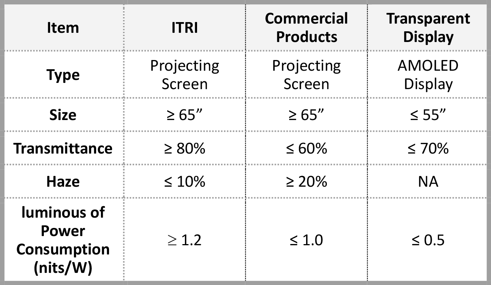

| 高清晰透明顯示幕 High Clearness Transparent Projection Screen |
| 工研院以光學結構設計為基礎，搭配微結構製程技術，開發穿透率≥ 80%、Haze ≤10%、單位功耗產生亮度≥1.2 nits/W之高清晰透明投影顯示光學技術解決方案。可使投影光於屏幕接受面進行有效散射，同時維持屏幕後方景物清晰。其大尺寸、高透明及低成本特色，未來可應用於智慧車窗顯示、智慧育樂、智慧零售等場域。 ITRI has developed high clearness transparent projection screen solution based on the technology of optical structural design and micro structure. The transmittance ≥ 80%; haze ≤ 10%; the luminous of power consumption ≥ 1.2 nits/ W. This technology can effectively scatter the projected light on the surface of the screen, and keep the background scene clear. With features of large size, high transparency and low cost, it can be applied to window of smart car, smart showcases, smart edutainment, smart retail and other fields in future.  |
| 技術洽詢聯絡人：莊坤霖 聯絡電話：03-5917098 E-mail：jasonchuang@itri.org.tw |